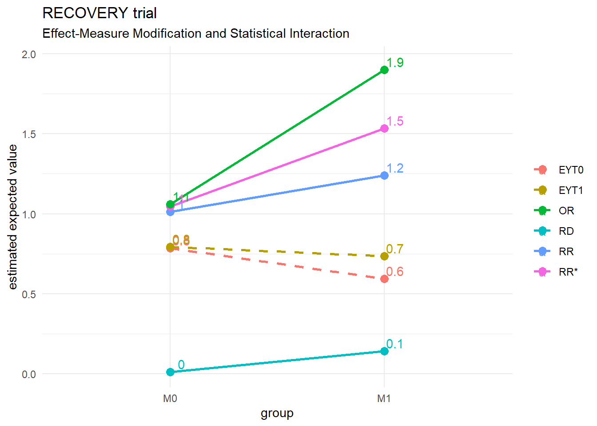
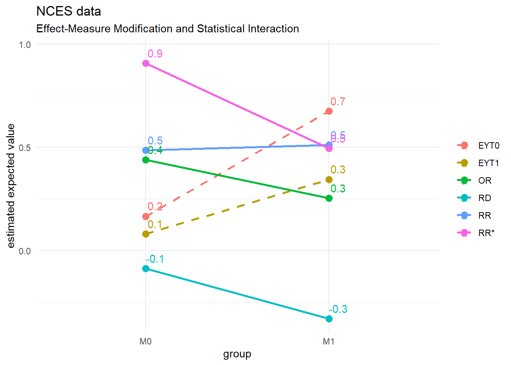
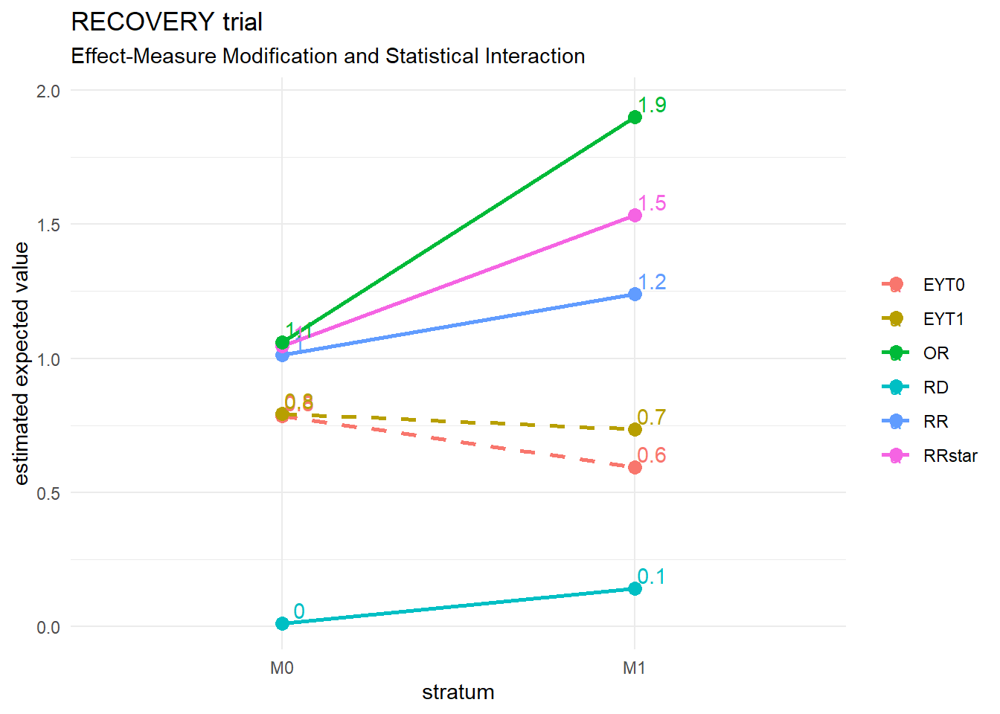
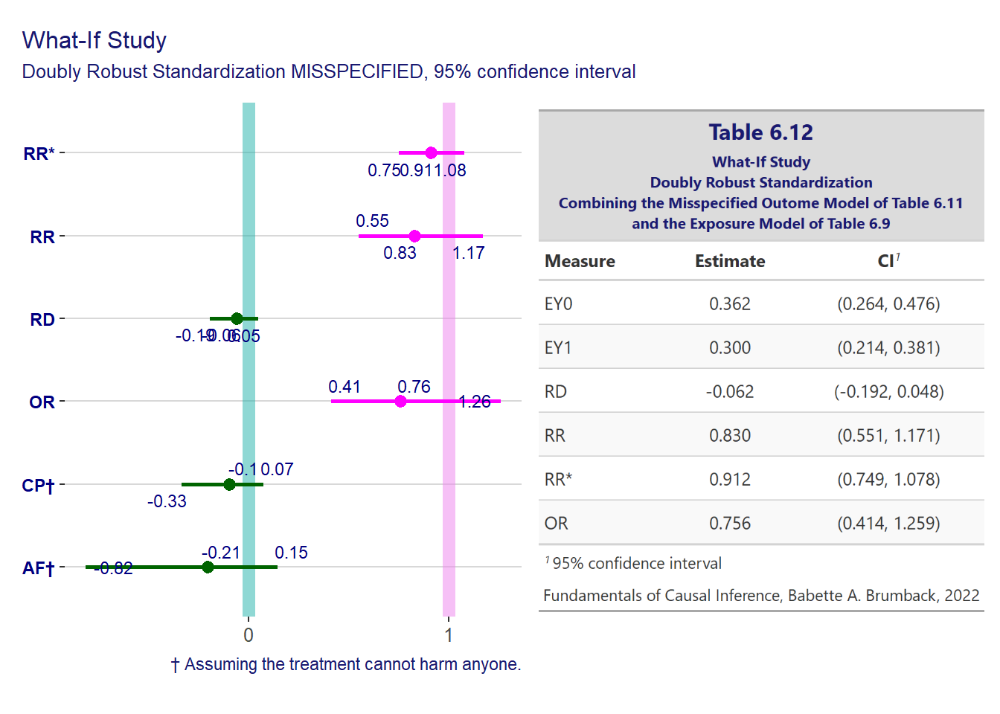

Chapter 4 Effect-Measure Modification and Causal Interaction
library(fciR)
library(tidyr)
library(ggvenn, quietly = TRUE)4.1 Effect-Measure Modification and Statistical Interaction
4.1.1 RECOVERY trial
Create the data.frame for RECOVERY trial
# recovery <- expand.grid(Y = 0:1, `T` = 0:1, M = 0:1)
# recovery$n <- as.integer(c(787, 2851, 368, 1412, 278, 405, 86, 238))
# recovery <- lapply(X = seq_len(nrow(recovery)), FUN = function(i) {
# data.frame(
# M = rep(recovery$M[i], recovery$n[i]),
# `T` = rep(recovery$`T`[i], recovery$n[i]),
# Y = rep(recovery$Y[i], recovery$n[i])
# )
# })
# recovery <- do.call(rbind, recovery)
# # create an id variable for use with gee() later
# recovery$id <- seq_len(nrow(recovery))
data("recovery", package = "fciR")run boot() with the RECOVERY data set
# recovery.out <- boot(recovery, formula = Y ~ `T` + M)
recovery.out <- fciR::meas_effect_modif(recovery, formula = Y ~ `T` + M)verify the results with the author’s on p. 65.
bb <- data.frame(
estimator = c("EYT0", "EYT0", "EYT1", "EYT1", "RD", "RD",
"EYT0", "EYT1", "RD", "RR", "RR", "RR",
"RR*", "RR*", "RR*", "OR", "OR", "OR"),
group = c("M0", "M1", "M0", "M1", "M0", "M1",
"diff", "diff", "diff", "M0", "M1", "diff",
"M0", "M1", "diff", "M0", "M1", "diff"),
est = c(0.784, 0.593, 0.793, 0.735, 0.01, 0.142,
-0.191, -0.059, 0.132, 1.012, 1.239, 1.224,
1.046, 1.533, 1.466, 1.059, 1.9, 1.794)
)
comp <- data.frame(bb = bb,
d = recovery.out[match(paste(bb$estimator, bb$group),
paste(recovery.out$estimator, recovery.out$group)),
"est"])
comp$dev <- abs(comp$bb.est - comp$d)
stopifnot(sum(comp$dev) < 0.01)
# compand we communicate the results in a table
fciR::gt_measures_colgrp(recovery.out, var_grp = "group",
title = "Table 4.2 RECOVERY Trial",
subtitle = "Effect-measure Modification")| Table 4.2 RECOVERY Trial | ||||||
|---|---|---|---|---|---|---|
| Effect-measure Modification | ||||||
| Estimator | M0 | M1 | diff | |||
| Estimate | CI1 | Estimate | CI1 | Estimate | CI1 | |
| EYT0 | 0.784 | (0.770, 0.797) | 0.593 | (0.556, 0.629) | -0.191 | (-0.230, -0.151) |
| EYT1 | 0.793 | (0.776, 0.811) | 0.735 | (0.685, 0.782) | -0.059 | (-0.113, -0.007) |
| RD | 0.010 | (-0.012, 0.032) | 0.142 | (0.081, 0.202) | 0.132 | (0.064, 0.198) |
| RR | 1.012 | (0.985, 1.042) | 1.239 | (1.132, 1.356) | 1.224 | (1.109, 1.347) |
| RR* | 1.046 | (0.944, 1.166) | 1.533 | (1.242, 1.874) | 1.466 | (1.143, 1.849) |
| OR | 1.059 | (0.930, 1.215) | 1.900 | (1.410, 2.534) | 1.794 | (1.273, 2.481) |
| Fundamentals of Causal Inference, Babette A. Brumback, 2022 | ||||||
|
1
95% confidence interval
|
||||||
plotting the results makes it easier to see the measures vary among the strata. We can clearly see here significant difference in effect measures between the 2 strata.
It supports the observation in the text concerning the lack of effect of dexamethasone without intrusive mechanical ventilation (M0) vs its use with intrusive mechanical ventilation (M1) which is significant.
fciR::ggp_measures_modif(recovery.out, title = "RECOVERY trial")
The gee::gee() function is used to find information on the coefficients
and see if they are statistically significant. The same could be done
withe glm::glm() but gee offers results with robust statistics which
is very useful in practical terms.
Luckily, the gee() works exactly like the glm() functions, with the same
extractor functions coefficients(), effects(), etc. See the documentation
of lm with ?lm for more details.
We are going through an example just below to illustrate how tthe extractor functions are used which is not shown in the textbook.
linmod <- gee::gee(Y ~ `T` + M + `T` * M,
id = id,
data = recovery,
family = gaussian)## Beginning Cgee S-function, @(#) geeformula.q 4.13 98/01/27## running glm to get initial regression estimate## (Intercept) T M T:M
## 0.78367235 0.00958608 -0.19070017 0.13200964summary(linmod)##
## GEE: GENERALIZED LINEAR MODELS FOR DEPENDENT DATA
## gee S-function, version 4.13 modified 98/01/27 (1998)
##
## Model:
## Link: Identity
## Variance to Mean Relation: Gaussian
## Correlation Structure: Independent
##
## Call:
## gee::gee(formula = Y ~ T + M + T * M, id = id, data = recovery,
## family = gaussian)
##
## Summary of Residuals:
## Min 1Q Median 3Q Max
## -0.7932584 0.2067416 0.2163277 0.2163277 0.4070278
##
##
## Coefficients:
## Estimate Naive S.E. Naive z Robust S.E. Robust z
## (Intercept) 0.78367235 0.006975704 112.3431253 0.006826403 114.8001855
## T 0.00958608 0.012170195 0.7876686 0.011778554 0.8138588
## M -0.19070017 0.017545664 -10.8687918 0.019999408 -9.5352906
## T:M 0.13200964 0.030881745 4.2746820 0.033074076 3.9913327
##
## Estimated Scale Parameter: 0.1770267
## Number of Iterations: 1
##
## Working Correlation
## [,1]
## [1,] 1To extract the coefficients from the gee object we use the extractor function
coefficients() or its alias coef()
coef(linmod)## (Intercept) T M T:M
## 0.78367235 0.00958608 -0.19070017 0.13200964and to extract the entire coefficient data to work
with it, just use coefficients() with summary()
coef(summary(linmod))## Estimate Naive S.E. Naive z Robust S.E. Robust z
## (Intercept) 0.78367235 0.006975704 112.3431253 0.006826403 114.8001855
## T 0.00958608 0.012170195 0.7876686 0.011778554 0.8138588
## M -0.19070017 0.017545664 -10.8687918 0.019999408 -9.5352906
## T:M 0.13200964 0.030881745 4.2746820 0.033074076 3.9913327and in this case we are concerned about how significant the interaction is.
Therefore the Robust z is extracted with coefficients() alias coef()
coef(summary(linmod))[, "Robust z"]## (Intercept) T M T:M
## 114.8001855 0.8138588 -9.5352906 3.9913327we see that \(T:M\) is 3.99 standard deviations away from zero which will give us the 2-sided p-value that is significant
z <- coef(summary(linmod))["T:M", "Robust z"]
2 * (1 - pnorm(z))## [1] 6.570304e-054.1.2 NCES
We process the NCES data the same way we did for the RECOVERY trial.
Run the bootsrap
nces.out <- fciR::meas_effect_modif(nces, formula = highmathsat ~ female + selective)verify the results with the author’s on p. 70.
bb <- data.frame(
estimator = c("EYT0", "EYT0", "EYT1", "EYT1", "RD", "RD",
"EYT0", "EYT1", "RD", "RR", "RR", "RR",
"RR*", "RR*", "RR*", "OR", "OR", "OR"),
group = c("M0", "M1", "M0", "M1", "M0", "M1",
"diff", "diff", "diff", "M0", "M1", "diff",
"M0", "M1", "diff", "M0", "M1", "diff"),
est = c(0.167, 0.675, 0.081, 0.345, -0.086, -0.33,
0.509, 0.264, -0.244, 0.486, 0.511, 1.052,
0.907, 0.496, 0.547, 0.44, 0.254, 0.576)
)
comp <- data.frame(bb = bb,
d = nces.out[match(paste(bb$estimator, bb$group),
paste(nces.out$estimator, nces.out$group)),
"est"])
comp$dev <- abs(comp$bb.est - comp$d)
stopifnot(sum(comp$dev) < 0.01)and the table is
fciR::gt_measures_colgrp(nces.out, var_grp = "group",
title = "Table 4.3 NCES data",
subtitle = "Effect-measure Modification")| Table 4.3 NCES data | ||||||
|---|---|---|---|---|---|---|
| Effect-measure Modification | ||||||
| Estimator | M0 | M1 | diff | |||
| Estimate | CI1 | Estimate | CI1 | Estimate | CI1 | |
| EYT0 | 0.167 | (0.136, 0.199) | 0.675 | (0.597, 0.751) | 0.509 | (0.425, 0.588) |
| EYT1 | 0.081 | (0.054, 0.106) | 0.345 | (0.241, 0.451) | 0.264 | (0.159, 0.373) |
| RD | -0.086 | (-0.127, -0.047) | -0.330 | (-0.457, -0.198) | -0.244 | (-0.375, -0.107) |
| RR | 0.486 | (0.333, 0.706) | 0.511 | (0.372, 0.725) | 1.052 | (0.655, 1.753) |
| RR* | 0.907 | (0.864, 0.949) | 0.496 | (0.375, 0.669) | 0.547 | (0.413, 0.741) |
| OR | 0.440 | (0.289, 0.667) | 0.253 | (0.144, 0.469) | 0.576 | (0.291, 1.205) |
| Fundamentals of Causal Inference, Babette A. Brumback, 2022 | ||||||
|
1
95% confidence interval
|
||||||
and we plot the results
fciR::ggp_measures_modif(nces.out, title = "NCES data")
We observe that
- RD: Risk difference shows that using selection to accept more women seem to decrease the % of school with hogh math SAT
- OR and RRstar: Show the same results as RD
- RR: Indicates that selection, in relative terms has no significant effect
4.2 Qualitative Agreement of Effect Measures in Modification
This section relies heavily on the paper from Shannin and Brumback (2021) Jake Shannin (2021). It used a Monte-Carlo simulation in java by jake running 1000000 times for six effect measures (the 4 in this chapter, the hazard ratio HR and the recovery ration HR*).
For the purpose of this project we only simulate the 4 effect measures
discussed so far (RD, RR, RR* and OR). We use R package MonteCarlo with 5000
repetitions. The distribution used for simulation is the beta distribution
which is generally used for values in [0,1]. It is also used as a prior of
binomial regression in Bayes analysis which is the subject covered a little
later in this section. Regardless if the 6 effects measures from Jake Shannin (2021)
or the 4 from Brumback (2022) are used, the process and conclusion are the
same.
We point out that using the distribution \(Beta(1, 1) \sim Uniform(0, 1)\) is equivalent to running a grid search. It is also equivalent to the uniform distribution used in Jake Shannin (2021).
4.2.1 Simulate the effect measures
We run the Monte-Carlo simulation without constraint and with \(Beta(1,1)\) which is equivalent to \(Uniform(0,1)\) used by Jake Shannin (2021).
message("this takes 1 sec.: we load a saved file instead")## this takes 1 sec.: we load a saved file instead# startTime <- Sys.time()
# gridsim <- fciR::mc_beta_effect_measures(shape1 = 1, shape2 = 1, nrep = 5000)
# endTime <- Sys.time()
# print(endTime - startTime)
a_file <- file.path(dir_data, "chap04_gridsim.rds")
# saveRDS(gridsim, file = a_file)
gridsim <- readRDS(file = a_file)which gives the vector of percentages
unlist(gridsim)## RD_RR RD_RRstar RD_OR RR_RRstar
## 0.0000 0.0000 0.0000 0.0000
## RR_OR RRstar_OR RD_RR_vs_RRstar_OR RD_RRstar_vs_RR_OR
## 0.0000 0.0000 0.0260 0.0296
## RD_OR_vs_RR_RRstar RD_RR_RRstar RD_RR_OR RD_RRstar_OR
## 0.0000 0.0000 0.0600 0.0546
## RR_RRstar_OR RD_RR_RRstar_OR NONE
## 0.0000 0.8298 0.0000For the following discussion, we must note the following about the vector of percentages returned by the simulation.
- Pairwise events: Some measures move as 1 pair in the same direction while
all the other pairs move in different direction between each other.
These are 6 possibilities named
RD_RR,RD_RRstar,RD_OR,RR_RRstar,RR_OR,RRstar_OR. - Opposite pairwise events: Some measures move as 2 pairs but
each of the 2 pairs does not move in the same direction.
There are 3 possibilities, called
RD_RR_vs_RRstar_OR,RD_RRstar_vs_RR_ORandRD_OR_vs_RR_RRstar. These are the problematic ones as they cannot be represented in the Venn diagram of section 4.2. However we can distribute them to ensure probabilities add up to 1. For exampleRD_RR_vs_RRstar_ORwill be split 50% between pairwise eventsRD_RRand 50% to pairwise eventRRstar_OR. This enforces the very important rule that probabilities must add up to 1 without consequences on the conclusions reached. - 3-wise events: Some 3 measures move in the same direction together There are 4 possibilities
called
RD_RR_RRstar,RD_RR_OR,RD_RRstar_ORandRR_RRstar_OR. - All events: Sometimes all measures move together.
This is the possibility of interest discussed by Shannin and Brumback (2021).
This possibility is called
ALL. - No event: The possibility
NONEconcerns the event that no pair of measures move in the same direction. It is impossible and represents the empty set \(\emptyset\) which is one of the 3 conditions of a \(\sigma-field\). - Validation: The sum of the vector’s elements must be one.
The event definitions above ensure that the sample space is actually a \(\sigma-field\). See Geoffrey R. Grimmet (2001), section 1.2.
then we compare with the author’s results
bb <- c("RD_RR" = 0.026, "RD_RRstar" = 0.026, "RD_OR" = 0,
"RR_RRstar" = 0, "RR_OR" = 0.026, "RRstar_OR" = 0.026,
"RD_RR_vs_RRstar_OR" = 0,
"RD_RRstar_vs_RR_OR" = 0,
"RD_OR_vs_RR_RRstar" = 0,
"RD_RR_RRstar" = 0, "RD_RR_OR" = 0.057,
"RD_RRstar_OR" = 0.057, "RR_RRstar_OR" = 0,
"RD_RR_RRstar_OR" = 0.833, "NONE" = 0)
comp <- data.frame(bb = round(bb, 4), sim = round(unlist(gridsim), 4))
comp## bb sim
## RD_RR 0.026 0.0000
## RD_RRstar 0.026 0.0000
## RD_OR 0.000 0.0000
## RR_RRstar 0.000 0.0000
## RR_OR 0.026 0.0000
## RRstar_OR 0.026 0.0000
## RD_RR_vs_RRstar_OR 0.000 0.0260
## RD_RRstar_vs_RR_OR 0.000 0.0296
## RD_OR_vs_RR_RRstar 0.000 0.0000
## RD_RR_RRstar 0.000 0.0000
## RD_RR_OR 0.057 0.0600
## RD_RRstar_OR 0.057 0.0546
## RR_RRstar_OR 0.000 0.0000
## RD_RR_RRstar_OR 0.833 0.8298
## NONE 0.000 0.0000The results from the Monte Carlo simulation above confirm the main conclusion from Jake Shannin (2021) that all effect measures move together 84% of the time.
c("simulation" = unname(unlist(gridsim["RD_RR_RRstar_OR"])),
"author's" = unname(bb["RD_RR_RRstar_OR"]))## simulation author's
## 0.8298 0.8330We note that the sim adds up correctly to 1 but not the author’s which adds up to 1.051. This is explained on p. 72 as a bit of arbitrary allocations. The Jake Shannin (2021) paper (caption figure 1) mentions that they do not add to 1 because they include events that are not mutually exclusive.
c("simulation" = sum(unlist(gridsim)), "author's" = sum(bb))## simulation author's
## 1.000 1.051Actually, this is caused by the Opposite pairwise events which cannot be represented in the 4-set Venn diagram. For the purpose of this books we will simply split them between the events that makes them up without consequence on the conclusion.
The Opposite pairwise events are the following
# The events that pair of measures move together but in opposite
# direction of another pair who also move together
unlist(gridsim[c("RD_RR_vs_RRstar_OR", "RD_RRstar_vs_RR_OR", "RD_OR_vs_RR_RRstar")])## RD_RR_vs_RRstar_OR RD_RRstar_vs_RR_OR RD_OR_vs_RR_RRstar
## 0.0260 0.0296 0.0000and when we split them between their 2 sub-events we can generate the Venn diagram as follows
ggp_venn_sim(gridsim, n = 1000,
fill_colr = c("blue", "yellow", "green", "red"),
title = "Venn diagram of effect measure modifications")now for constrained data
message("this takes 1 sec.: we load a saved file instead")## this takes 1 sec.: we load a saved file instead# startTime <- Sys.time()
# gridsim_const <- fciR::mc_beta_effect_measures(shape1 = 1, shape2 = 1, nrep = 5000,
# constrained = TRUE)
# endTime <- Sys.time()
# print(endTime - startTime)
a_file <- file.path(dir_data, "chap04_gridsim_const.rds")
# saveRDS(gridsim_const, file = a_file)
gridsim_const <- readRDS(file = a_file)which gives the vector of percentages
unlist(gridsim_const)## RD_RR RD_RRstar RD_OR RR_RRstar
## 0.00000000 0.00000000 0.00000000 0.00000000
## RR_OR RRstar_OR RD_RR_vs_RRstar_OR RD_RRstar_vs_RR_OR
## 0.00000000 0.00000000 0.06260032 0.04975923
## RD_OR_vs_RR_RRstar RD_RR_RRstar RD_RR_OR RD_RRstar_OR
## 0.00000000 0.00000000 0.11597111 0.10393258
## RR_RRstar_OR RD_RR_RRstar_OR NONE
## 0.00000000 0.66773676 0.00000000and comparing to the author’s results
bb_const <- c("RD_RR" = 0.053, "RD_RRstar" = 0.053, "RD_OR" = 0.053,
"RR_RRstar" = 0, "RR_OR" = 0.053, "RRstar_OR" = 0.0,
"RD_RR_vs_RRstar_OR" = 0,
"RD_RRstar_vs_RR_OR" = 0,
"RD_OR_vs_RR_RRstar" = 0,
"RD_RR_RRstar" = 0, "RD_RR_OR" = 0.114,
"RD_RRstar_OR" = 0.114, "RR_RRstar_OR" = 0,
"RD_RR_RRstar_OR" = 0.667, "NONE" = 0)
sum(bb_const)## [1] 1.107comp <- data.frame(bb = round(bb_const, 4),
sim = round(unlist(gridsim_const), 4))
comp## bb sim
## RD_RR 0.053 0.0000
## RD_RRstar 0.053 0.0000
## RD_OR 0.053 0.0000
## RR_RRstar 0.000 0.0000
## RR_OR 0.053 0.0000
## RRstar_OR 0.000 0.0000
## RD_RR_vs_RRstar_OR 0.000 0.0626
## RD_RRstar_vs_RR_OR 0.000 0.0498
## RD_OR_vs_RR_RRstar 0.000 0.0000
## RD_RR_RRstar 0.000 0.0000
## RD_RR_OR 0.114 0.1160
## RD_RRstar_OR 0.114 0.1039
## RR_RRstar_OR 0.000 0.0000
## RD_RR_RRstar_OR 0.667 0.6677
## NONE 0.000 0.0000The results from the Monte Carlo simulation with the constrained data agree the author’s result.
c("simulation" = unname(unlist(gridsim_const["RD_RR_RRstar_OR"])),
"author's" = unname(bb_const["RD_RR_RRstar_OR"]))## simulation author's
## 0.6677368 0.6670000Again the Opposite pairwise events cannot be represented in the 4-set Venn diagram.
# The events that pair of measures move together but in opposite
# direction of another pair who also move together
unlist(gridsim_const[c("RD_RR_vs_RRstar_OR", "RD_RRstar_vs_RR_OR", "RD_OR_vs_RR_RRstar")])## RD_RR_vs_RRstar_OR RD_RRstar_vs_RR_OR RD_OR_vs_RR_RRstar
## 0.06260032 0.04975923 0.00000000but if we do it as mentioned above then we can show a Venn diagram as follows
# This is a custom function using the venn package
ggp_venn_sim(gridsim_const,
fill_colr = c("cyan", "gold", "springgreen", "hotpink"),
title = "Venn diagram for constrained data")
4.2.2 Applications
4.2.2.1 Simulation of distribution of effect measures
We use a parametric Monte Carlo simulation using the beta distribution to evaluate the effect of the distribution assumption on the effect-measure modifications.
We run the Monte-Carlo simulation with 5000 repetitions, a grid of
shape1 and shape2 parameters for the Beta distribution and no
constraint. Namely mc_beta_effect_measures(shape1 = c(0.5, 1, 3, 5, 7), shape2 = c(0.5, 1, 3, 5, 7), nrep = 5000)
message("this takes 25 sec.: we load a saved file instead")## this takes 25 sec.: we load a saved file instead# startTime <- Sys.time()
# priorsim <- fciR::mc_beta_effect_measures(shape1 = c(0.5, 1, 3, 5, 7),
# shape2 = c(0.5, 1, 3, 5, 7),
# nrep = 5000)
# endTime <- Sys.time()
# print(endTime - startTime)
a_file <- file.path(dir_data, "chap04_priorsim.rds")
# saveRDS(priorsim, file = a_file)
priorsim <- readRDS(file = a_file)and we look at the matrix for the event RD_RR_RRstar_OR which represents the
event that all effect measures move in the same direction.
The matrix elements correspond to the percentage frequency of the event given
the beta distribution with shape parameters shape1 = s1 with s1 indicated
as column names, and shape2 = s1 parameter with s2 indicated in the row names.
The beta distribution with shape1 = 1 and shape2 = 1 is similar to the uniform
distribution on \([0, 1]\). Therefore this element is the one simulated by Shannon
and Brumback, see Jake Shannin (2021) and, in fact, with 5000 repetitions
nrep = 5000the measure is almost always very close to what is mentioned
in Jake Shannin (2021).
Also note that for large \(shape1 = shape2 = \text{large number}\) the beta distribution is similar to the normal distribution with a mean of \(shape1 / (shape1 + shape2)\). The simulation shows that in that case the percentage of measures moving in the same directions is nearing 100%. See for example when \(shape1 = shape2 = 7\) in the matrix of results from the sim.
here is the matrix of percentage of times that all measures move in the same
direction, i.e. the event RD_RR_RRstar_OR
round(priorsim[["RD_RR_RRstar_OR"]], 2)## s1=0.5 s1=1 s1=3 s1=5 s1=7
## s2=0.5 0.78 0.81 0.82 0.83 0.83
## s2=1 0.81 0.84 0.86 0.87 0.86
## s2=3 0.82 0.86 0.90 0.91 0.91
## s2=5 0.83 0.86 0.91 0.92 0.92
## s2=7 0.83 0.87 0.91 0.93 0.93and to show as a heatmap
ggp_betasim(priorsim, var = "RD_RR_RRstar_OR",
colr = list("low" = "deepskyblue1", "high" = "deepskyblue4"))
and comparing with the author
round(c("simulation" = priorsim[["RD_RR_RRstar_OR"]]["s2=1", "s1=1"],
"author's" = unname(bb["RD_RR_RRstar_OR"])), 3)## simulation author's
## 0.835 0.833We can see that the range is wide and should be considered.
range(priorsim[["RD_RR_RRstar_OR"]])## [1] 0.7842 0.9310Now we do it with constrained data
message("this takes 30 sec.: we load a saved file instead")## this takes 30 sec.: we load a saved file instead# startTime <- Sys.time()
# priorsim_const <- fciR::mc_beta_effect_measures(shape1 = c(0.5, 1, 3, 5, 7),
# shape2 = c(0.5, 1, 3, 5, 7),
# nrep = 5000, constrained = TRUE)
# endTime <- Sys.time()
# print(endTime - startTime)
a_file <- file.path(dir_data, "chap04_priorsim_const.rds")
# saveRDS(priorsim_const, file = a_file)
priorsim_const <- readRDS(file = a_file)ggp_betasim(priorsim_const, var = "RD_RR_RRstar_OR",
colr = list("low" = "lightsalmon1", "high" = "lightsalmon4"),
title = "Monte Carlo simulation. Constrained data.")
and comparing with the author
round(c("simulation" = priorsim_const[["RD_RR_RRstar_OR"]]["s2=1", "s1=1"],
"author's" = unname(bb_const["RD_RR_RRstar_OR"])), 3)## simulation author's
## 0.662 0.667and the range is even larger and therefore more significant.
range(priorsim_const[["RD_RR_RRstar_OR"]])## [1] 0.5710824 0.85652174.2.2.2 Application: Data pre-processing (data cleaning)
Unless the \(p_0, p_1\) obtained are uniformly distributed (not the most common scenario for sure) it seems from the results above that the likelihood of not having all effect measures moving in the same direction is low. Thus, it could be a good hint to uncover hidden processes in a data pre-processing routine.
We note the important rule mentioned at the beginning of section 4.2
when relative risk \(RR\) and other relative risk \(RR^*\) both change in the same direction […] then so must the difference the risk difference and odds ratio.
Another rule from section 4.2 can help in data cleaning
When \(RR_0\) and \(RR_1\) are on opposite side of 1, that is, when in one stratum the treatment is helpful and in the other it is harmful, then all measures will automatically change together.
Thus a quick, easy way to clean up potential data problems and obtain relevant details on outliers and hidden processes might be
- Exclude cases when \(RR\) and \(RR^*\) change in the same direction to reduce the data load.
- Exclude cases when \(RR_0\) and \(RR_1\) are on opposite side of 1
- Investigate the remining cases asthey are good candidates for hidden processes
4.2.2.3 Application: Bayesian prior in Beta-binomial model
If we use information from the population, or from expert knowledge, that effect measures should move in the same direction then a beta distribution with \(shape1 > 1, shape2 > 1\) would make sense and provide a better prior for the Beta-binomial model.
On the contrary, if we wish that the model look into the unlikely events that effect measure do not move in the same directions, then a beta distribution with \(shape1 \leq 1, shape2 \leq 1\) could be supported by the results from above.
4.3 Causal Interaction
4.4 Exercises
The exercises are located in a separate project.